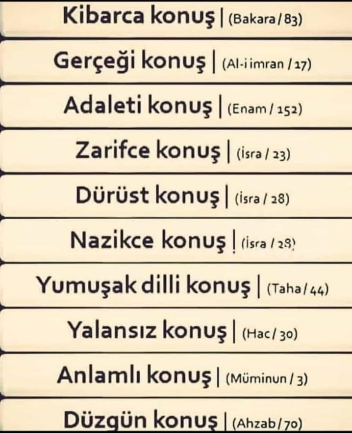
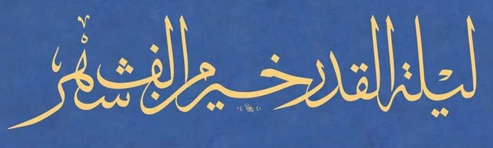

11 Mart 2024 Pazartesi günü başlayan Ramazan ayında topladığımız meyveleri bir sayfada özetledim. Ayrıntılara ilgili linklerden erişebilirsiniz. Linklerden sonra gelen isimlere, ilgili konuya katkıları için teşekkür ederim.
Gece kâim, gündüz sâim
Ey insanlar! Üzerinize ulu bir ay gölgesini saldı
Kutsal ve bereketli bir ay
İçinde bin aydan hayırlı bir gece var
Allah onun siyâmını farz kıldı
Gece kıyâmını da tatavvu kıldı Arşiv (E Coşan makalesi)
3. gün – Mescid-i Haram
Kur'ân dilinde harâm kelimesinin iki anlamı var:
* kutsal, hürmetli
* yasaklı, girilmez
Hakikaten, Mescid-i Haram için iki anlam da geçerli:
inananlar için kutsal; inkarcılar için yasaklı, girilmez. Arşiv
Kuran-ı Kerim korunmasaydı ne olurdu? İşte şu harikulade, insan eseri Mesnevi'nin ilk satırında görüldüğü gibi, sayısız farklı sürümleri olurdu! Madem ki Kuran'ın tek sürümü var, o halde hakikaten korunmuştur. Damlalar (Sonuç cümlesi G Gülcü'den)
8. gün – Bu yolda yalnız yürümek
Sarı saçlı, beyaz tenli bir Amerikalı, her türlü kötü yolu denemiş, sonunda hapse düşmüş. Müslüman zenciler ona İslamı öğretmiş. Adam hapisten çıkınca yukarda gösterdiğim siteyi yapmış, nur yüzlü bir adam olmuş. Kaderin eli insanı böyle yoğuruyor, adi bir suçludan evliya doğuruyor. Arşiv
OSMANLI´DAN GÜNÜMÜZE KUR´AN VE HÜSN-İ HAT konferansında, Tayyar Altıkulaç'ın açılış konuşması (Amasya, Kasım 2013) 10 sayfa, çok net ve anlaşılır bir konuşma metni. Son paragraf şöyle:
Mushaflarda imla farklılığının, Yüce Kitabın mevsûkıyeti (güvenilirliği) konusu ile bir ilgisi yoktur. Yani bu farklılıkların farklı manalara yol açması elbette söz konusu değildir. O mukaddes metin Resm-i Osmanî ile de yazılsa, bu konuda Aliyyül-Karî veya başka bir hattatın tercihine de uyulsa mana aynı olacaktır.
Türkçede Kur'an ile neredeyse eş-anlamlı kullanılan bu kelimenin, diğerinden ne farkı var? Cevap kolay: Kur'an bir, mushaf çok.
Kur'an esas olarak sözlü bir mesajdır, Melek'ten Nebi'ye 23 yıl içinde kulaktan aktarılmıştır. Hz Musa'nın Tur dağında aldığı levhalara benzemez. Bu nedenle Kur'an yazılmaz, okunur! Okunuşunda bir miktar çeşitliliğe izin verilmiştir: "yedi harf" hadisi. Arşiv (tamamlanacak) (S İdrisoğlu)
15. gün – Muvakkit soruları
Amatör bir muvakkit olarak iki gözlem paylaşıyorum:
* Dikkatinizi çekmiştir, iftar vakti her gün bir dakika ilerliyor, imsak vakti ise çoğu gün iki dakika geri gidiyor, imsak neden daha hızlı?
* 3-4 sene önce, İzmir'in iftar vakti İstanbul'dan önce idi, bir kaç yıldır daha sonra oluyor, neden, ne değişti? Arşiv
18. gün – Nasıl konuşmalı?

Sözün gücünü vurgulayan ayetler (tamamlanacak) (İ Gürol gönderdi)
19. gece – Tahriflerden Korunma Yöntemi
Şimdi anlıyorum ki, teravihin asıl amacı Kuran'ı ayakta ve namaz içinde okumak. Bu nedenle "Kuran namazı" ya da "Kıyam namazı" gibi isimleri var başka ülkelerde. Rüku ve secdeler Kuran tilavetini süsleyen yan ürünler oluyor. Korunmuş Kitap
21. gece – Kalem ve ağaç
Kalem yazdı sanırsın...
hattat elini görmezsen
Ağaç yaptı sanırsın...
Kudret Elini görmezsen Arşiv (H Ünal gönderdi)
23. gece – Tavafa uzaktan bakış
Tavafı hiç böyle görmemiştim: 90 saniyede 7.5 saat
Akşam ve Yatsı namazlarında, kısa bir süre için beyaz ve siyah noktalar ayrılıyor; bunun dışında tavaf hiç durmuyor. YouTube (A Saatçi gönderdi)

97:3 Kadir gecesi bin aydan hayırlıdır
Ömründe deniz görmemiş birisine denizi nasıl anlatırsınız?
- Denizde o kadar çok su var ki...
- Ne kadar çok? on kova? yüz kova?
- Ne kovası, bin havuzdan daha çok!
Kadir Gecesi de böyle hayırlı, on gece değil, bin aydan daha çok... Nun vel-kalem